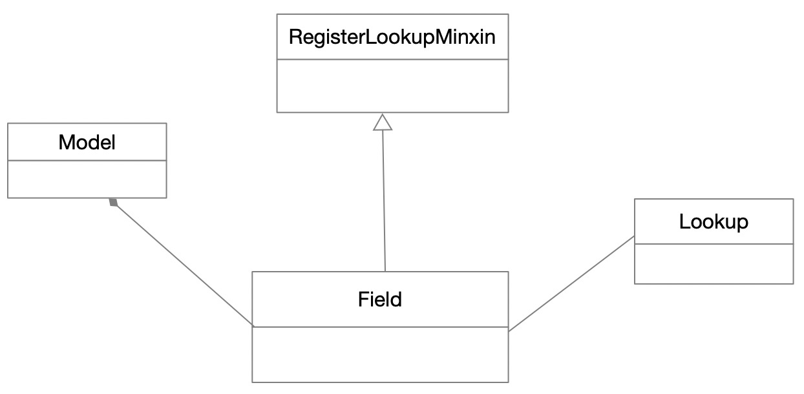

上篇django Model源码解析一简单分析了models.Model对象是怎么通过它的元类models.ModelBase管理的。
今天分析下Model对象中定义的相关Field代码，也就是相应的表字段是怎么管理的。还是昨天基本示例代码。
from django.db import models
class Student(models.Model):
name = models.CharField(max_length=20)
age = models.SmallIntegerField()
我们查看CharField的源码，发现它继承自Field对象。继续追踪Field代码，发现它继承自混合类RegisterLookupMixin。
@total_ordering
class Field(RegisterLookupMixin):
"""Base class for all field types"""
# Designates whether empty strings fundamentally are allowed at the
# database level.
empty_strings_allowed = True
empty_values = list(validators.EMPTY_VALUES)
# These track each time a Field instance is created. Used to retain order.
# The auto_creation_counter is used for fields that Django implicitly
# creates, creation_counter is used for all user-specified fields.
creation_counter = 0
auto_creation_counter = -1
default_validators = [] # Default set of validators
default_error_messages = {
'invalid_choice': _('Value %(value)r is not a valid choice.'),
'null': _('This field cannot be null.'),
'blank': _('This field cannot be blank.'),
'unique': _('%(model_name)s with this %(field_label)s '
'already exists.'),
# Translators: The 'lookup_type' is one of 'date', 'year' or 'month'.
# Eg: "Title must be unique for pub_date year"
'unique_for_date': _("%(field_label)s must be unique for "
"%(date_field_label)s %(lookup_type)s."),
}
system_check_deprecated_details = None
system_check_removed_details = None
# Field flags
hidden = False
many_to_many = None
many_to_one = None
one_to_many = None
one_to_one = None
related_model = None
descriptor_class = DeferredAttribute
# Generic field type description, usually overridden by subclasses
def _description(self):
return _('Field of type: %(field_type)s') % {
'field_type': self.__class__.__name__
}
description = property(_description)
Field自身定义比较简单，通过装饰器total_ordering确保所有比较运算的特殊方法都定义（__gt__，__ge__，__lt__，__le__)
Field的__init__方法就是将传进来的值简单初始化，这里不再展示代码。
下面看看混合类RegisterLookupMixin的代码
class RegisterLookupMixin:
@classmethod
def _get_lookup(cls, lookup_name):
return cls.get_lookups().get(lookup_name, None)
@classmethod
@functools.lru_cache(maxsize=None)
def get_lookups(cls):
class_lookups = [parent.__dict__.get('class_lookups', {}) for parent in inspect.getmro(cls)]
return cls.merge_dicts(class_lookups)
def get_lookup(self, lookup_name):
from django.db.models.lookups import Lookup
found = self._get_lookup(lookup_name)
if found is None and hasattr(self, 'output_field'):
return self.output_field.get_lookup(lookup_name)
if found is not None and not issubclass(found, Lookup):
return None
return found
def get_transform(self, lookup_name):
from django.db.models.lookups import Transform
found = self._get_lookup(lookup_name)
if found is None and hasattr(self, 'output_field'):
return self.output_field.get_transform(lookup_name)
if found is not None and not issubclass(found, Transform):
return None
return found
@staticmethod
def merge_dicts(dicts):
"""
Merge dicts in reverse to preference the order of the original list. e.g.,
merge_dicts([a, b]) will preference the keys in 'a' over those in 'b'.
"""
merged = {}
for d in reversed(dicts):
merged.update(d)
return merged
@classmethod
def _clear_cached_lookups(cls):
for subclass in subclasses(cls):
subclass.get_lookups.cache_clear()
@classmethod
def register_lookup(cls, lookup, lookup_name=None):
if lookup_name is None:
lookup_name = lookup.lookup_name
if 'class_lookups' not in cls.__dict__:
cls.class_lookups = {}
cls.class_lookups[lookup_name] = lookup
cls._clear_cached_lookups()
return lookup
@classmethod
def _unregister_lookup(cls, lookup, lookup_name=None):
"""
Remove given lookup from cls lookups. For use in tests only as it's
not thread-safe.
"""
if lookup_name is None:
lookup_name = lookup.lookup_name
del cls.class_lookups[lookup_name]
可以看出，RegisterLoolupMixin主要用来管理Lookups，而Lookups负责将对应的域和SQL语句关联起来。Lookups调用Field.register_lookup关联 Field，这样避免了Field和Lookup的强关联。
通过Model定义表的基本例子，我们看到Model使用Field的方式是组合方式，这样显然比继承更灵活。组合相对于继承并不破坏封装性，而且能在运行的时候动态替换成其他对象。
因此，除非要强调子类和父类的从属关系，而且子类只是简单扩展父类行为时用继承。其他情况都应该尽量使用组合。

上图是Django Model的UML简图。Field组合与Model，而Lookup和Field关联。Django Model源码分析就到这里了，抽时间会总结下Django认证和中间件的相关知识。